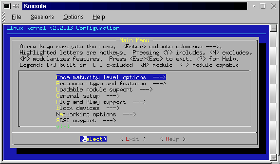
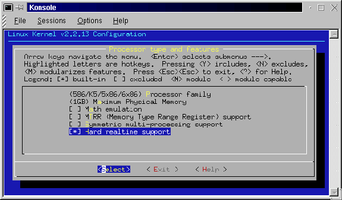

This is a part of the process that mystifies me still. When I first installed the real time patch to Red Hat 5.2 and used Tim's install script, www.ktmarketing.com http://www.ktmarketing.com I never really appreciated all of the work that went into setting up that config file. I just accepted his file and went on.
You can do essentially the same thing with the new kernel (not with his RH5.2 file) but you will wind up without a lot of the things that you may want and some things that you will need. All of the config choices will present you with a list of default options that you can accept, but that list is limited in what it's kernel will do for you.
The first thing that I need to do is look at what is running on my system right now.
[root@localhost src]# /sbin/lsmod
Module Size Used by
nls_cp437 3580 1 (autoclean)
vfat 11004 1 (autoclean)
fat 32640 1 (autoclean) [vfat]
nls_iso8859-1 2052 2 (autoclean)
sound 64184 0 (autoclean) (unused)
soundcore 3524 3 (autoclean) [sound]
soundlow 300 0 (autoclean) [sound]
lockd 33256 1 (autoclean)
sunrpc 56612 1 (autoclean) [lockd]
slhc 4392 0
supermount 14880 2 (autoclean)
nfs 31832 1 (autoclean)
Now, I warn you that the list of modules running on your system may be very different from those running on mine. But at least I have a start at knowing what needs to be included when I run make oldconfig, make config, make menuconfig, or make xconfig. You will want to be certain that each of the modules returned by the /sbin/lsmod command is included in your .config file.
It also took me a while to discover that the exact name of the module is included in the help files that are available when you run make menuconfig or make xconfig. There is a lot of confusion that can develop between the all caps variable names and the actual module name.
I have included a few lines of a .config file below so that you can see how one is setup.
This is cryptic stuff. Each parameter is given a name by someone far away. Those names are all uppercase and where multiple words are used the space between is underlined. Parameters that are not used are commented # out. Parameters that are used have a y or an m after the equals sign. A y means that the parameter will be included directly in the kernel when it is compiled. An m means that the parameter will be compiled as a module and will be installed in the kernel whenever it is needed and removed when it is not needed.
#
# Automatically generated make config: don't
edit
#
# Code maturity level options
#
CONFIG_EXPERIMENTAL=y
# Processor type and features
#
# CONFIG_M386 is not set
# CONFIG_M486 is not set
CONFIG_M586=y
# CONFIG_M586TSC is not set
# CONFIG_M686 is not set
CONFIG_X86_WP_WORKS_OK=y
CONFIG_X86_INVLPG=y
CONFIG_X86_BSWAP=y
CONFIG_X86_POPAD_OK=y
CONFIG_1GB=y
# CONFIG_2GB is not set
# CONFIG_MATH_EMULATION is not set
CONFIG_MTRR=y
# CONFIG_SMP is not set
"So what?'' You say. Well the heart of this config thing is that each of the modules that was listed when I entered /sbin/lsmod needs to be included when you go through your config setup. But the modules listed are not the only way that the kernel is configured. There are also a bunch of parameters that are compiled right into the kernel itself.
So being a "quick and dirty" kind of installer, I could just copy the .config file from the old kernel structure to the new. But that will leave out essential information that is a part of the real time kernel. And as the first line in the file above says "# Automatically generated make config: don't edit." It is my understanding that you will need to go through the entire process of making a new .config in order to be certain that you have all of the essential stuff. (If you know better, let me know and I'll revise this.)
So let's compare the four methods we can use to manually set up a config file and then pick one or more and do it. These will be brief descriptions with visuals. I'm going to make sure that I am in the correct directory before I enter the config command.
[root@localhost linux]# pwd
/usr/src/rtlinux-2.0/linux
Yes, I am in the correct location for the configuration process. So I need to select the method that I will use. The possibilities again are:
This is quick and is done directly in the console window. There is no help and no description beyond the parameter name. It is also linear - it runs from the first entry in "Using defaults found in arch/i386/defconfig" to the last one. Then it writes the file and suggests your next step.
[root@localhost linux]# make
menuconfig
rm -f include/asm
( cd include ; ln -sf asm-i386 asm)
make -C scripts/lxdialog all
make[1]: Entering directory `/usr/src/rtlinux-2.2/linux/scripts/lxdialog'
..
After a bit of checking and compiling, the following window shows up. [install/images/konsol02.gif]

This seems to be a little more friendly. It also allows you to skip around among the many sections of the config file and repeat your work in each section. It may take a bit of reading to figure out how to move around within the menu system and what to do next. The following screen shows the processor type and features menu. [install/images/konsol03.gif]

You can navigate around the menu choices with the up and down arrow keys. You can also navigate across the select, exit, and help items with the left and right arrow keys. Whenever a parameter is highlighted, you can select it with y, deselect it with n, or make it a module with m. The help files are very helpful here.